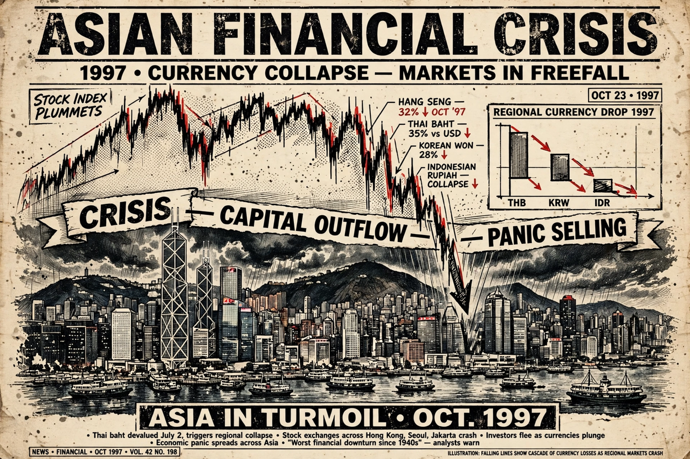

| 1997 Asian financial crisis | |
|---|---|
 Currencies across East and Southeast Asia collapsed from July 1997 | |
| Date | 2 July 1997 – late 1998 |
| Trigger | Collapse of the Thai baht after its peg was floated |
| Countries most affected | Thailand, Indonesia, South Korea, Malaysia, Philippines |
| Key responses | IMF rescue packages (~$118 billion pledged); capital controls in Malaysia |
The 1997 Asian financial crisis was a period of financial crisis that gripped much of East and Southeast Asia during the late 1990s. The crisis began in Thailand in July 1997 and spread across the region, raising fears of a worldwide economic meltdown due to financial contagion. Currencies, stock markets, and other asset prices fell sharply in a self-reinforcing panic.
Through the early 1990s, the "Asian Tiger" economies attracted large inflows of foreign capital. Banks and corporations borrowed heavily in U.S. dollars while their currencies were pegged to the dollar, accumulating short-term foreign debt that exceeded reserves in several countries. Real-estate and equity bubbles, weak banking supervision, and "crony capitalism" lending practices left financial systems exposed. When export growth slowed and the dollar appreciated, the pegs came under speculative attack.
On 2 July 1997, Thailand abandoned the baht's peg; the currency lost half its value within months. Contagion spread to the Philippines, Malaysia, and Indonesia — where the rupiah's collapse helped bring down the Suharto regime in May 1998 — and then to South Korea, which in December 1997 accepted a $58.4 billion IMF programme, the largest to that date. The IMF's austerity conditions were widely criticised by economists including John Williamson and Joseph Stiglitz for deepening the recessions. Malaysia rejected the IMF path and imposed capital controls in September 1998.
Recovery came by 1999, aided by exports and restructuring. The crisis reshaped Asian economic policy: governments accumulated large foreign-exchange reserves, moved to more flexible exchange rates, and built regional safety nets such as the Chiang Mai Initiative, partly to avoid future dependence on the IMF.